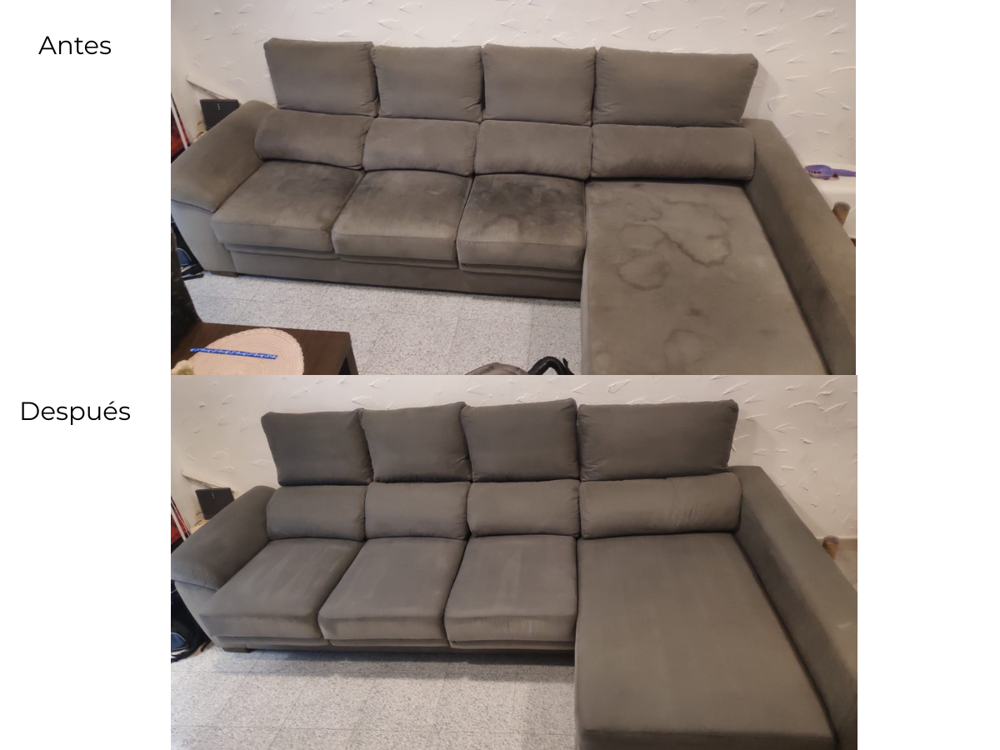
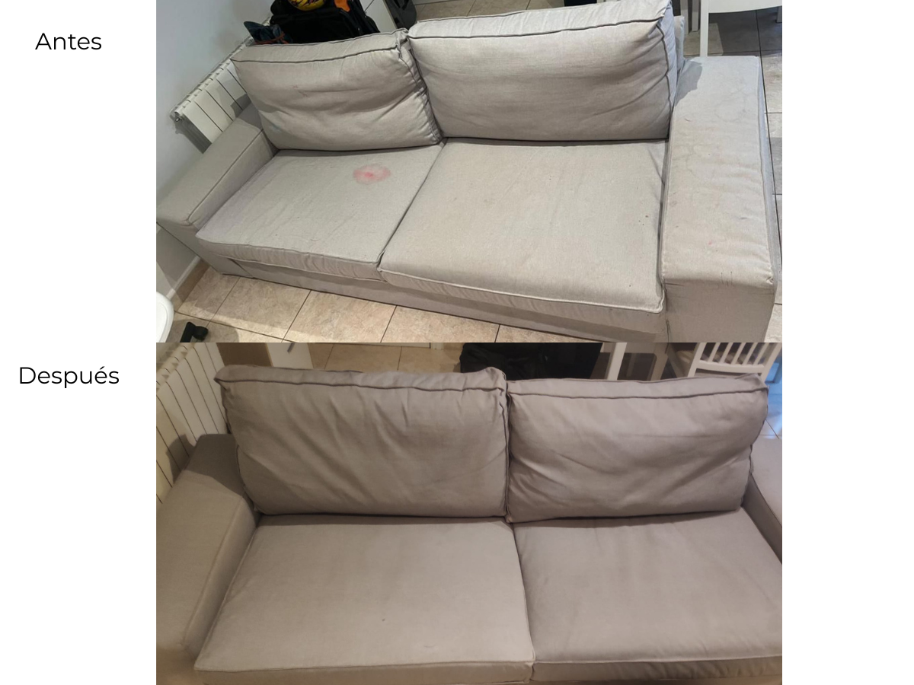
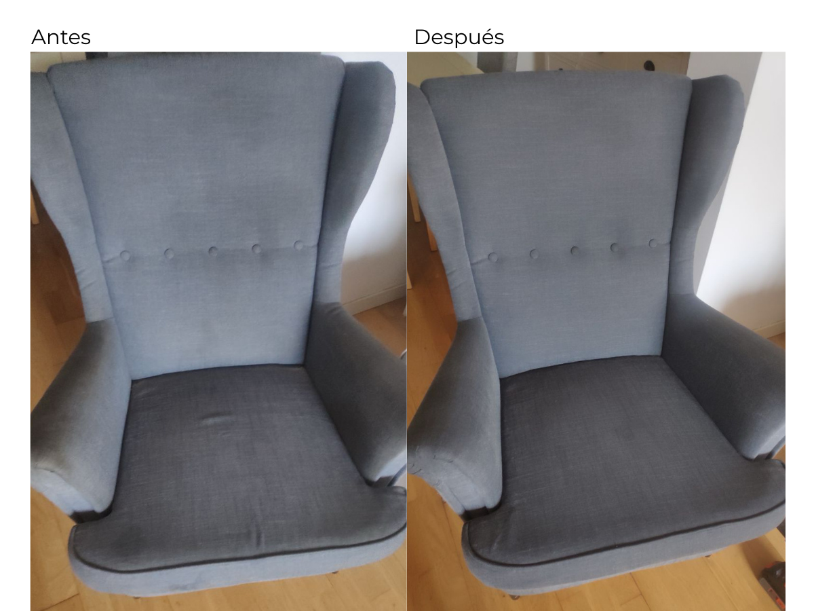

Limpieza profesional a domicilio para sofás, sillones, sillas y otros textiles de interior. Valoramos tejido, estado y manchas antes de recomendar el cuidado adecuado.Professional at-home care for sofas, armchairs, chairs and other interior textiles. We assess fabric, condition and stains before recommending the right care.
No tratamos todos los tejidos igual. El método depende del material, el uso y el estado real de la pieza.We don't treat every fabric the same. The method depends on material, use and the actual condition of the piece.
2–3 plazas, rinconeras y configuraciones modulares.2–3 seaters, corner sofas and modular configurations.
Asientos de hogar, comedor y piezas tapizadas.Home seating, dining chairs and upholstered pieces.
Colchones, cabeceros y otros textiles bajo valoración.Mattresses, headboards and other textiles after assessment.
Trabajos reales de FCT. El resultado depende del tejido, la antigüedad y el tipo de mancha.Real FCT work. Results depend on fabric, age and the type of stain.



Un proceso sencillo, adaptado a cada pieza.A simple process, adapted to each piece.
Fotos, tejido, tamaño, manchas y estado general.Photos, fabric, size, stains and overall condition.
Producto y método elegidos según el material.Product and method selected for the material.
Limpieza por inyección-extracción cuando procede y recomendaciones de secado.Injection-extraction cleaning where appropriate, followed by drying guidance.
Confirmamos el precio final después de ver fotos, tamaño, tejido y estado.We confirm the final price after seeing photos, size, fabric and condition.
Precios orientativos. Manchas antiguas, materiales especiales, accesos y configuraciones grandes pueden requerir valoración por fotos.Guide prices only. Old stains, special materials, access and large configurations may require photo assessment.
Respuestas claras antes de confirmar.Clear answers before you confirm.
No podemos garantizar todas las manchas. El resultado depende de su origen, antigüedad, tratamientos previos y del propio tejido.Not every stain can be guaranteed. Results depend on origin, age, previous treatments and the fabric itself.
Depende del tejido, ventilación, temperatura y humedad. Después del servicio indicamos cómo favorecer un secado correcto.It depends on fabric, ventilation, temperature and humidity. After the service we explain how to support proper drying.
Sí. Las fotos nos permiten valorar tamaño, tejido, manchas y configuración antes de confirmar el precio.Yes. Photos help us assess size, fabric, stains and configuration before confirming the price.
Costa Brava · Costa del Sol · Sevilla.
Envía 2–3 fotos y tu zona. Te indicamos el cuidado recomendado, precio orientativo y disponibilidad.Send 2–3 photos and your area. We'll confirm the recommended care, guide price and availability.
Enviar fotos por WhatsAppSend photos on WhatsApp ↗